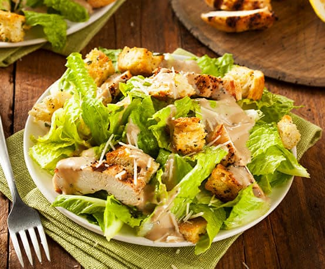

Ensalada César

Descripción
La ensalada César es una mezcla clásica de lechuga romana crujiente, pechuga de pollo dorada, crutones y queso parmesano.
Con un aderezo cremoso a base de limón, ajo y aceite de oliva, esta ensalada es fresca y deliciosa, ideal como plato principal o acompañamiento.
Ingredientes
- Lechuga romana
- Pechuga de pollo
- Queso parmesano rallado
- Crutones
- Sal
- Pimienta
- Limón
- Ajo
- Salsa César
- Aceite de oliva
Pasos
-
Cocina la pechuga de pollo en una sartén con sal y pimienta hasta que esté dorada y cocida.
-
Corta la lechuga romana en trozos grandes y colócala en un bol.
- Añade los crutones y el queso parmesano rallado a la lechuga..
-
Corta el pollo cocido en tiras y agrégalo a la ensalada.
- Prepara una vinagreta mezclando jugo de limón, ajo picado y aceite de oliva.
-
Rocía la ensalada con la vinagreta y mezcla bien.
- Añade la salsa César al gusto y sirve la ensalada inmediatamente.